7.1 Systems and Environments
🎯 What is a System?
In physics, a system is a small portion of the universe that we choose to study. The environment is everything outside the system that can interact with it.
📌 A System Can Be:
- A single object or particle - Example: A baseball flying through the air
- A collection of objects - Example: The Earth-Moon system
- A region of space - Example: Gas inside an engine cylinder
- Variable in size and shape - Example: A rubber ball deforming when hitting a wall
💡 What is Energy?
Energy is the ability to do work. It is a scalar quantity measured in Joules (J).
Types of Energy:
| Energy Type | Description | Example |
|---|---|---|
| Kinetic Energy \(K\) | Energy of motion | Moving car, flowing river |
| Potential Energy \(U\) | Stored energy due to position | Book on a shelf, compressed spring |
| Thermal Energy | Internal energy due to temperature | Hot coffee, friction-heated brakes |
| Chemical Energy | Stored in molecular bonds | Battery, food, gasoline |
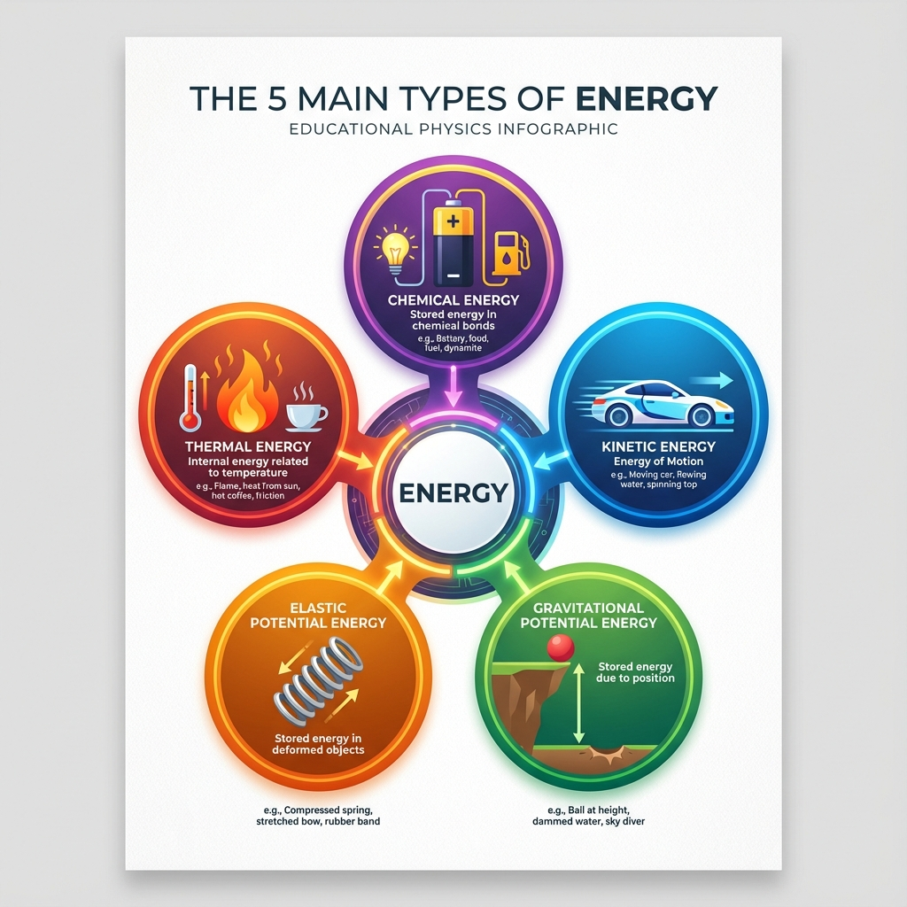
📖 Example 1: Identifying Systems
Scenario: A person throws a ball upward.
Different System Choices:
- System = Ball only
Environment includes: Earth (gravity), air (resistance), person's hand initially - System = Ball + Earth
Environment includes: air, person's hand - System = Ball + Earth + Air
Environment includes: person's hand, surroundings
📖 Example 2: Energy Transfer Analysis
Problem: A car accelerates from rest to 20 m/s. Analyze the energy transfers for two different system choices.
Solution:
System A: Car only
- Initial KE = 0 (at rest)
- Final KE = ½mv² (moving at 20 m/s)
- Energy enters the system via work done by the road on the tires
System B: Car + Fuel
- Chemical PE in fuel decreases
- KE of car increases
- Some energy leaves as heat (thermal energy)
- This is an internal transformation - no external work!
📖 Example 3: Open vs Closed Systems
Problem: Classify each system as open, closed, or isolated:
- A thermos bottle with hot coffee
- A pot of boiling water on a stove
- The entire universe
Solution:
| System | Classification | Reasoning |
|---|---|---|
| Thermos | Nearly Isolated | Minimizes energy and matter exchange |
| Boiling pot | Open | Energy enters (heat), matter leaves (steam) |
| Universe | Isolated | Contains everything - no "outside" to exchange with |
7.2 Work Done by a Constant Force
📐 Definition of Work
Work is done when a force causes a displacement. For a constant force, work is defined as:
Where:
- \(W\) = Work done (Joules, J)
- \(F\) = Magnitude of the force (Newtons, N)
- \(d\) = Magnitude of the displacement (meters, m)
- \(\theta\) = Angle between force and displacement vectors
⚠️ SI Unit of Work:
1 Joule (J) = 1 Newton·meter (N·m) = 1 kg·m²/s²
⚠️ Common Misconception:
"Any force does work on an object."
❌ FALSE! A force only does work if there is displacement AND the force has a component along the displacement direction.
Example: When you hold a heavy box stationary, you exert force but do ZERO work (no displacement). When you carry it horizontally, your upward force still does zero work (perpendicular to motion)!
🧠 Quick Check:
A person pushes against a wall with 200 N for 10 seconds. How much work is done?
🎨 Visual Understanding
Force at different angles relative to displacement
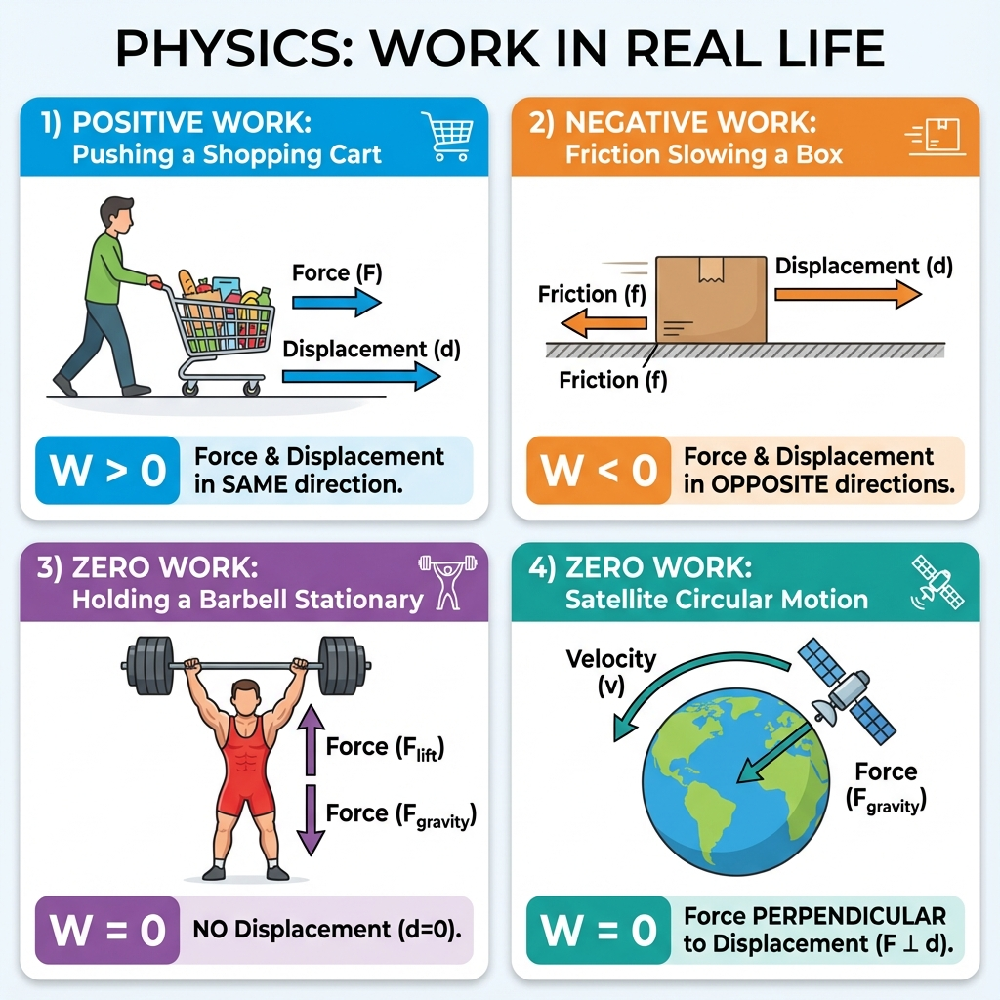
📊 Work in Different Scenarios
| Angle \(\theta\) | \(\cos(\theta)\) | Work | Meaning |
|---|---|---|---|
| \(0^\circ\) | 1 | \(W = F d\) (Maximum) | Force parallel to motion |
| \(0^\circ < \theta < 90^\circ\) | Positive | \(W > 0\) | Force has component along motion |
| \(90^\circ\) | 0 | \(W = 0\) | Force perpendicular to motion |
| \(90^\circ < \theta < 180^\circ\) | Negative | \(W < 0\) | Force opposes motion |
| \(180^\circ\) | -1 | \(W = -F d\) (Minimum) | Force directly opposes motion |
📐 Free Body Diagrams for Work Problems
Correctly drawing force diagrams is essential for work calculations:
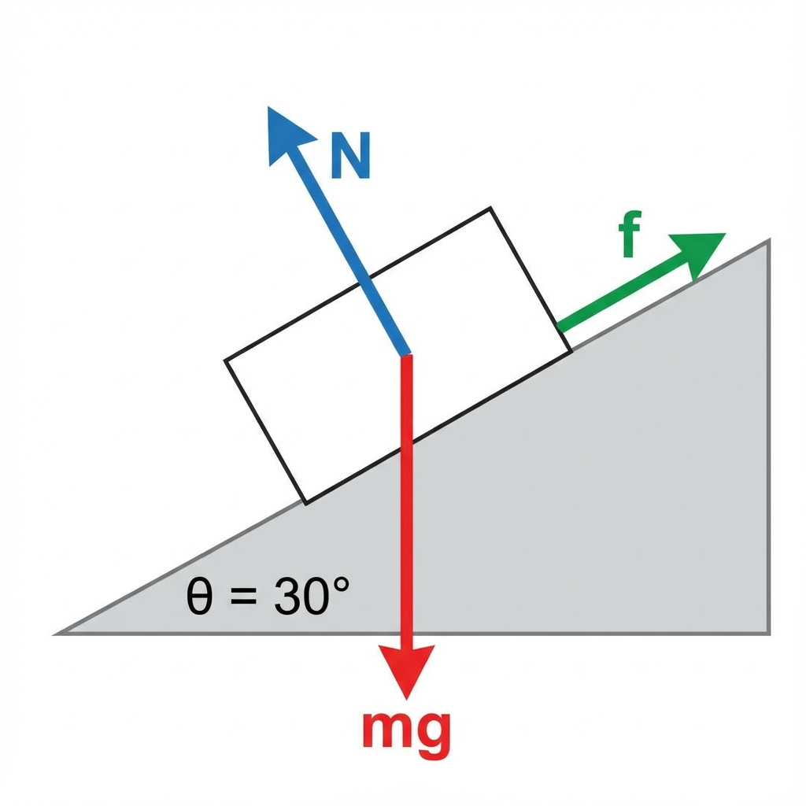
Box on Incline:
N
perpendicular to surface, mg straight down
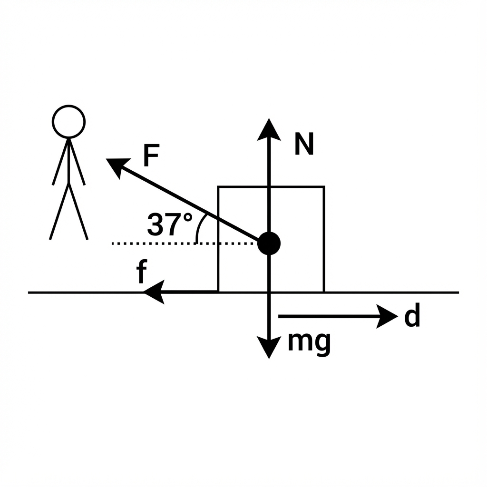
Pulling a Box:
F along rope
direction, N upward
📖 Example 2: Pushing a Box
Problem: A person pushes a 20 kg box with a force of 100 N at an angle of 30° below the horizontal. The box moves 5 m horizontally. Calculate the work done by:
- The applied force
- Gravity
- Normal force
Given: \(F = 100 \text{ N}\), \(d = 5 \text{ m}\), \(\theta = 30^\circ\)
$$ W = F d \cos(\theta) $$ $$ W = 100 \times 5 \times \cos(30^\circ) $$ $$ W = 100 \times 5 \times 0.866 $$ \(W \approx 433 \text{ J}\)
Gravity acts vertically downward, displacement is horizontal
\(\theta = 90^\circ\) between force and displacement
$$ W = mg d \cos(90^\circ) $$ $$ W = mg d \times 0 $$ \(W = 0 \text{ J}\)
Normal force acts vertically upward, displacement is horizontal
\(\theta = 90^\circ\)
\(W = 0 \text{ J}\)
📖 Example 3: Lifting an Object
Problem: You lift a 5 kg book from the floor to a shelf 2 m high at constant velocity. Calculate:
- Work done by you
- Work done by gravity
- Net work
\(m = 5 \text{ kg}\), \(d = 2 \text{ m}\), \(g = 10 \text{ m/s}^2\)
Constant velocity means \(a = 0\), so \(F_{\text{applied}} = mg\)
Your force upward = \(mg = 5 \times 10 = 50 \text{ N}\)
Displacement upward = \(2 \text{ m}\)
\(\theta = 0^\circ\) (same direction)
$$ W = 50 \times 2 \times \cos(0^\circ) $$ \(W = 100 \text{ J}\)
Force = \(mg = 50 \text{ N}\) (downward)
Displacement = \(2 \text{ m}\) (upward)
\(\theta = 180^\circ\) (opposite directions)
$$ W = 50 \times 2 \times \cos(180^\circ) $$ $$ W = 50 \times 2 \times (-1) $$ \(W = -100 \text{ J}\)
$$ W_{\text{net}} = W_{\text{you}} + W_{\text{gravity}} $$ $$ W_{\text{net}} = 100 + (-100) $$ \(W_{\text{net}} = 0 \text{ J}\)
📖 Example 4: Work on an Incline
Problem: A 10 kg box slides 4 m down a 30° incline. Calculate the work done by gravity.
Vertical drop = \(4 \sin(30°) = 4 \times 0.5 = 2\) m
$$ W_g = mgh = 10 \times 10 \times 2 = 200 \text{ J} $$
Force of gravity = \(mg = 100\) N (downward)
Angle between gravity and displacement along incline = \(90° - 30° = 60°\)
$$ W = 100 \times 4 \times \cos(60°) = 100 \times 4 \times 0.5 = 200 \text{ J} $$
📖 Example 5: Friction Work Problem
Problem: A 5 kg block is pushed 3 m across a floor with μₖ = 0.4. Calculate the work done by friction.
Normal force = \(mg = 5 \times 10 = 50\) N
Friction = \(\mu_k N = 0.4 \times 50 = 20\) N
Friction opposes motion, so θ = 180°
$$ W_f = 20 \times 3 \times \cos(180°) = 20 \times 3 \times (-1) $$ \(W_f = -60\) J
📖 Example 6: Net Work Calculation
Problem: Three forces act on a 2 kg object moving 4 m to the right: F₁ = 20 N (right), F₂ = 15 N (at 60° above horizontal), F₃ = 8 N (left). Find the net work.
\(W_1 = 20 \times 4 \times \cos(0°) = 80\) J
\(W_2 = 15 \times 4 \times \cos(60°) = 15 \times 4 \times 0.5 = 30\) J
\(W_3 = 8 \times 4 \times \cos(180°) = 8 \times 4 \times (-1) = -32\) J
$$ W_{net} = W_1 + W_2 + W_3 = 80 + 30 - 32 = 78 \text{ J} $$
7.3 The Scalar Product of Two Vectors
🔢 Dot Product (Scalar Product)
The scalar product (or dot product) of two vectors A and B is a scalar quantity defined as:
Or in component form:
📏 Properties of the Dot Product
- Commutative: \(\mathbf{A} \cdot \mathbf{B} = \mathbf{B} \cdot \mathbf{A}\)
- Distributive: \(\mathbf{A} \cdot (\mathbf{B} + \mathbf{C}) = \mathbf{A} \cdot \mathbf{B} + \mathbf{A} \cdot \mathbf{C}\)
- With scalar: \((c\mathbf{A}) \cdot \mathbf{B} = c(\mathbf{A} \cdot \mathbf{B})\)
- Self product: \(\mathbf{A} \cdot \mathbf{A} = A^2\)
🎯 Unit Vector Dot Products
| Product | Result | Reason |
|---|---|---|
| \(\mathbf{\hat{i}} \cdot \mathbf{\hat{i}}\) | 1 | Parallel vectors (\(\theta = 0^\circ\)) |
| \(\mathbf{\hat{j}} \cdot \mathbf{\hat{j}}\) | 1 | Parallel vectors (\(\theta = 0^\circ\)) |
| \(\mathbf{\hat{k}} \cdot \mathbf{\hat{k}}\) | 1 | Parallel vectors (\(\theta = 0^\circ\)) |
| \(\mathbf{\hat{i}} \cdot \mathbf{\hat{j}}\) | 0 | Perpendicular vectors (\(\theta = 90^\circ\)) |
| \(\mathbf{\hat{i}} \cdot \mathbf{\hat{k}}\) | 0 | Perpendicular vectors (\(\theta = 90^\circ\)) |
| \(\mathbf{\hat{j}} \cdot \mathbf{\hat{k}}\) | 0 | Perpendicular vectors (\(\theta = 90^\circ\)) |
⚡ Work as a Dot Product
Using the dot product, we can write work more elegantly:
This is equivalent to: W = F d cos(θ)
📖 Example 4: Computing Dot Products
Problem: Given A = 3i + 4j and B = 2i - j, find:
- A · B
- The angle between them
$$ \mathbf{A} \cdot \mathbf{B} = A_x B_x + A_y B_y $$ $$ \mathbf{A} \cdot \mathbf{B} = (3)(2) + (4)(-1) $$ $$ \mathbf{A} \cdot \mathbf{B} = 6 - 4 $$ \(\mathbf{A} \cdot \mathbf{B} = 2\)
\(|\mathbf{A}| = \sqrt{3^2 + 4^2} = \sqrt{9 + 16} = \sqrt{25} = 5\)
\(|\mathbf{B}| = \sqrt{2^2 + (-1)^2} = \sqrt{4 + 1} = \sqrt{5} \approx 2.24\)
$$ \mathbf{A} \cdot \mathbf{B} = |\mathbf{A}| |\mathbf{B}| \cos(\theta) $$ $$ 2 = (5)(2.24) \cos(\theta) $$ $$ \cos(\theta) = \frac{2}{11.2} \approx 0.179 $$ \(\theta \approx 79.7^\circ\)
📖 Example 5: Work Using Vectors
Problem: A force F = 10i + 5j N displaces an object through d = 3i + 4j m. Find the work done.
$$ W = \mathbf{F} \cdot \mathbf{d} $$ $$ W = F_x d_x + F_y d_y $$ $$ W = (10)(3) + (5)(4) $$ $$ W = 30 + 20 $$ \(W = 50 \text{ J}\)
7.4 Work Done by a Varying Force
📈 Variable Force Work
When force varies with position, we must use integration:
Physical Meaning: Work equals the area under the Force vs. Position graph!
🔗 Work Done by a Spring (Hooke's Law)
A spring exerts a force proportional to its displacement from equilibrium:
Where:
- \(k\) = spring constant (N/m) - measure of stiffness
- \(x\) = displacement from equilibrium (m)
- The negative sign indicates the force opposes displacement
⚙️ Spring Constant \(k\):
- Large \(k\) → Stiff spring (hard to compress/stretch)
- Small \(k\) → Soft spring (easy to compress/stretch)
🧮 Deriving Work Done on a Spring
To find work done in stretching/compressing a spring from \(x_i\) to \(x_f\):
From equilibrium (\(x_i = 0\)) to position \(x_f\):
The negative sign indicates we do negative work if we go with the spring force, or positive work if we go against it.
🎮 Interactive Spring Simulator
📖 Example 6: Compressing a Spring
Problem: A spring with k = 500 N/m is compressed from its equilibrium position by 10 cm. How much work is done by:
- The external force (you) compressing it?
- The spring force?
\(k = 500 \text{ N/m}\)
\(x_i = 0 \text{ m}\) (equilibrium)
\(x_f = -0.10 \text{ m}\) (compressed, taking compression as negative)
$$ W_{\text{spring}} = \frac{1}{2}k(x_i^2 - x_f^2) $$ $$ W_{\text{spring}} = \frac{1}{2}(500)(0^2 - (-0.10)^2) $$ $$ W_{\text{spring}} = \frac{1}{2}(500)(0 - 0.01) $$ $$ W_{\text{spring}} = 250(-0.01) $$ \(W_{\text{spring}} = -2.5 \text{ J}\)
By energy conservation, external work must equal negative of spring work:
\(W_{\text{external}} = -W_{\text{spring}}\)
\(W_{\text{external}} = +2.5 \text{ J}\)
• Spring does negative work (opposes compression)
• You do positive work (supply energy to compress)
• Energy stored in spring = 2.5 J
📖 Example 7: Spring Released from Compression
Problem: The spring from Example 6 is released. How much work does the spring force do as it returns to equilibrium?
\(x_i = -0.10 \text{ m}\) (compressed)
\(x_f = 0 \text{ m}\) (equilibrium)
$$ W_{\text{spring}} = \frac{1}{2}k(x_i^2 - x_f^2) $$ $$ W_{\text{spring}} = \frac{1}{2}(500)((-0.10)^2 - 0^2) $$ $$ W_{\text{spring}} = \frac{1}{2}(500)(0.01) $$ \(W_{\text{spring}} = +2.5 \text{ J}\)
7.5 Kinetic Energy and the Work-Kinetic Energy Theorem
🏃 Kinetic Energy (KE)
Kinetic energy is the energy associated with the motion of an object.
Where:
- \(K\) = Kinetic Energy (Joules, J)
- \(m\) = Mass (kg)
- \(v\) = speed (magnitude of velocity) (m/s)
Note: Kinetic Energy is a scalar quantity and is always non-negative (\(K \geq 0\)).
✨ Work-Kinetic Energy Theorem
When work is done on a system and the only change is in its speed:
- Positive Net Work (\(W_{\text{net}} > 0\)): Energy added → Speed increases
- Negative Net Work (\(W_{\text{net}} < 0\)): Energy removed → Speed decreases
- Zero Net Work (\(W_{\text{net}} = 0\)): No change in speed
⚠️ Common Misconception:
"Doubling the speed doubles the kinetic energy."
❌ FALSE! Since \(K = \frac{1}{2}mv^2\), kinetic energy depends on \(v^2\). Doubling speed quadruples the KE!
This is why car crashes at high speeds are so much more dangerous: a car at 60 mph has 4 times the KE of a car at 30 mph.
🧠 Quick Check:
A 2 kg ball moving at 3 m/s has its speed increased to 6 m/s. By what factor did its KE increase?
📖 Example 8: Stopping a Car
Problem: A 1000 kg car traveling at 20 m/s skids to a stop. How much work does friction do on the car?
\(m = 1000 \text{ kg}\)
\(v_i = 20 \text{ m/s}\)
\(v_f = 0 \text{ m/s}\) (stopped)
$$ W_{\text{net}} = \Delta K = K_f - K_i $$ $$ W_{\text{net}} = \frac{1}{2}m(v_f^2) - \frac{1}{2}m(v_i^2) $$ $$ W_{\text{net}} = 0 - \frac{1}{2}(1000)(20^2) $$ $$ W_{\text{net}} = -500(400) $$ \(W_{\text{net}} = -200,000 \text{ J} = -200 \text{ kJ}\)
7.6 Potential Energy of a System
🔋 Potential Energy (PE)
Potential energy is energy stored in a system due to the configuration (position) of its parts. It requires a system of at least two objects interacting via a force.
🌍 Gravitational Potential Energy (\(U_g\))
Energy stored in the Earth-Object system due to height.
Where:
- \(m\) = mass (kg)
- \(g\) = acceleration due to gravity (\(9.8 \text{ m/s}^2\))
- \(y\) = height above a reference point (m)
🌀 Elastic Potential Energy (\(U_s\))
Energy stored in a deformed spring (or elastic material).
Where \(x\) is displacement from equilibrium.
Note: \(U_s\) is always positive (since \(x^2\) is always positive).
🔄 Internal Energy
Energy associated with the temperature and structure of a system (friction creates internal energy). When friction acts within a system:
Where \(f_k\) is kinetic friction and \(d\) is the path length.
• Parabolic curve
• Single stable equilibrium at x = 0
• Force: F = -kx (proportional to displacement)
📖 Example 9: Gravitational PE Calculation
Problem: A 2 kg book is moved from a table 0.8 m high to a shelf 2.5 m above the floor. Calculate the change in gravitational PE.
\(m = 2\) kg, \(y_i = 0.8\) m, \(y_f = 2.5\) m
$$ \Delta U_g = mg(y_f - y_i) $$ $$ \Delta U_g = (2)(10)(2.5 - 0.8) $$ $$ \Delta U_g = 20 \times 1.7 $$ \(\Delta U_g = 34\) J
📖 Example 10: Elastic PE in a Spring
Problem: A spring with k = 200 N/m is stretched 15 cm from equilibrium. Calculate the elastic PE stored.
\(k = 200\) N/m, \(x = 0.15\) m
$$ U_s = \frac{1}{2}kx^2 $$ $$ U_s = \frac{1}{2}(200)(0.15)^2 $$ $$ U_s = 100 \times 0.0225 $$ \(U_s = 2.25\) J
📖 Example 11: Combined PE Problem
Problem: A 0.5 kg ball on a spring (k = 400 N/m) is compressed 8 cm and raised 1.2 m. Find the total PE.
$$ U_g = mgy = (0.5)(10)(1.2) = 6 \text{ J} $$
$$ U_s = \frac{1}{2}kx^2 = \frac{1}{2}(400)(0.08)^2 = 1.28 \text{ J} $$
$$ U_{total} = U_g + U_s = 6 + 1.28 = 7.28 \text{ J} $$
7.7 Conservative and Nonconservative Forces
🛡️ Conservative Forces
A force is conservative if the work it does on a particle moving between two points is independent of the path taken.
Properties:
- Work depends only on initial and final positions.
- Work done moving around any closed loop is zero (\(W_{\text{closed}} = 0\)).
- We can define a Potential Energy (\(U\)) for it.
Examples: Gravity, Spring force, Electric force.
⛔ Nonconservative Forces
Work depends on the path taken. Mechanical energy is often converted to internal energy (heat).
Examples: Friction, Air resistance, Drag.
⚠️ Common Misconception:
"Energy is always conserved, so mechanical energy is always conserved."
❌ FALSE! Total energy is always conserved, but mechanical energy (K + U) is only conserved when ONLY conservative forces do work.
When friction acts, mechanical energy decreases (converted to thermal energy), but total energy is still conserved!
⚖️ Energy Conservation in a Pendulum
A swinging pendulum perfectly demonstrates energy transformation between PE and KE:
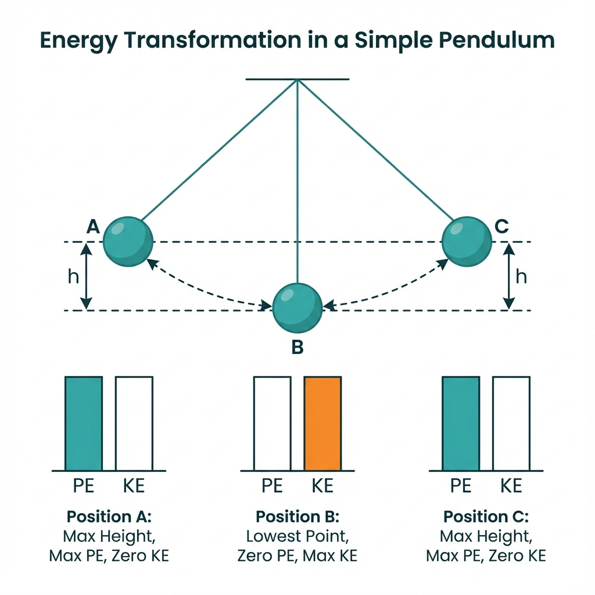
At points A and C (maximum height): Maximum PE, Zero
KE
At point B (lowest point): Zero PE, Maximum KE
Work Relations:
Conservative Force: $$ W_A = W_B = W_C $$
Nonconservative Force: $$ W_A < W_B < W_C $$
Visual Proof: For gravity (conservative), lifting a ball straight up (Path A) requires same work as pushing it up a ramp (Path B) to the same height (ignoring friction).
⚖️ Mechanical Energy
The total mechanical energy of a system is:
If only conservative forces act, mechanical energy is conserved:
If nonconservative forces (like friction) act:
📖 Example 12: Energy Conservation (No Friction)
Problem: A 2 kg ball is dropped from 10 m. Using energy conservation, find its speed just before hitting the ground.
\(K_i = 0\) (at rest), \(U_i = mgh = (2)(10)(10) = 200\) J
\(K_f = \frac{1}{2}mv^2\), \(U_f = 0\) (ground level)
$$ K_i + U_i = K_f + U_f $$ $$ 0 + 200 = \frac{1}{2}(2)v^2 + 0 $$ $$ v^2 = 200 $$ \(v = \sqrt{200} \approx 14.1\) m/s
📖 Example 13: Energy with Friction
Problem: A 5 kg box slides 3 m down a 30° incline with μₖ = 0.2. Find its final speed.
Initial PE: \(U_i = mgh = (5)(10)(1.5) = 75\) J
\(N = mg\cos(30°) = 50(0.866) = 43.3\) N
\(f_k = \mu_k N = (0.2)(43.3) = 8.66\) N
\(W_{nc} = -f_k d = -(8.66)(3) = -26\) J
$$ K_f = U_i + W_{nc} = 75 - 26 = 49 \text{ J} $$ $$ \frac{1}{2}(5)v^2 = 49 \Rightarrow v = \sqrt{19.6} \approx 4.4 \text{ m/s} $$
7.8 Relationship Between Conservative Forces and Potential Energy
🔗 Force from Potential Energy
Conservative forces always drive a system toward lower potential energy. The force is the negative derivative (slope) of the potential energy function.
- Steep slope (large \(dU/dx\)) → Strong force
- Flat slope (\(dU/dx = 0\)) → Zero force (Equilibrium)
- Positive slope → Force is negative (pushes left)
- Negative slope → Force is positive (pushes right)
⚖️ Types of Equilibrium
| Type | Condition | Description |
|---|---|---|
| Stable | \(\frac{dU}{dx} = 0\), \(U\) is min (valley) | System returns to position if displaced (like a ball in a bowl). |
| Unstable | \(\frac{dU}{dx} = 0\), \(U\) is max (peak) | System speeds away if displaced (like a ball on a hill). |
| Neutral | \(\frac{dU}{dx} = 0\), \(U\) is constant | System stays put if displaced (ball on flat table). |
📖 Example 9: Lennard-Jones Potential
The potential energy between two atoms in a molecule is often modeled as:
The force is \(F(r) = -dU/dr\). The atoms settle at the distance \(r\) where force is zero (minimum \(U\)) - this is the bond length!
📖 Example 14: Force from PE Function
Problem: Given \(U(x) = 3x^2 - 2x\) J, find (a) the force at x = 2 m, and (b) equilibrium positions.
$$ F = -\frac{dU}{dx} = -\frac{d}{dx}(3x^2 - 2x) = -(6x - 2) = 2 - 6x $$ At x = 2 m: \(F = 2 - 6(2) = -10\) N
Set F = 0: \(2 - 6x = 0 \Rightarrow x = \frac{1}{3}\) m
Since \(\frac{d^2U}{dx^2} = 6 > 0\), this is a stable equilibrium.
📖 Example 15: Spring Equilibrium Analysis
Problem: For a spring \(U = \frac{1}{2}kx^2\), prove x = 0 is stable equilibrium.
$$ F = -\frac{dU}{dx} = -\frac{d}{dx}\left(\frac{1}{2}kx^2\right) = -kx $$
At x = 0: F = 0 ✓ (equilibrium point)
$$ \frac{d^2U}{dx^2} = k > 0 $$ Positive second derivative → minimum → Stable!
📝 Chapter Summary & Practice
🔑 Key Formulas
- Work (Constant Force): \(W = F d \cos(\theta)\)
- Scalar Product: \(\mathbf{A} \cdot \mathbf{B} = AB \cos(\theta) = A_x B_x + A_y B_y\)
- Hooke's Law: \(F_s = -kx\)
- Work (Spring): \(W_s = -\frac{1}{2}k(x_f^2 - x_i^2)\)
- Kinetic Energy: \(K = \frac{1}{2}mv^2\)
- Work-KE Theorem: \(W_{\text{net}} = \Delta K\)
- Gravitational PE: \(U_g = mgy\)
- Elastic PE: \(U_s = \frac{1}{2}kx^2\)
- Conservation: \(E_i = E_f\) (if no nonconservative forces)
- Force from PE: \(F_x = -dU/dx\)
🧩 Topic 1: Systems & Energy Types
Q1: A cyclist moves down a hill. If we define the system as "Cyclist + Earth", is the gravitational force an external or internal force?
Q2: Identify the energy transformation: A battery-operated toy car accelerates up a ramp.
Q3: True or False: A system can have potential energy even if it consists of only a single isolated particle.
Q4: Which of the following is NOT a unit of energy? (a) Joule (b) Newton-meter (c) Watt (d) \(\text{kg} \cdot \text{m}^2/\text{s}^2\)
Q5: If the environment does positive work on a system, what happens to the system's total energy?
Q5a: A rocket burns fuel in space. Define the system as "rocket + exhaust gases". What energy transformation occurs?
Q5b: A compressed spring is placed between two carts on a frictionless surface and released. If the system is "both carts + spring", is the spring's force internal or external?
Q5c: Which represents energy transfer, not transformation?
(a) A ball falling
(b) A hot object warming a cold one
(c) A battery powering a motor
(d) A spring launching a ball
Q5d: A system loses \(50 \text{ J}\) of energy to the environment. What is \(W_{\text{env}}\)?
Q5e: In a car crash, KE is mainly converted to:
(a) Gravitational PE (b) Elastic PE (c) Internal Energy + Sound (d) Chemical Energy
📐 Topic 2: Work (Constant Force) & Dot Products
Q6: Calculate the work done by a force \(F = 20 \text{ N}\) pushing a box \(3 \text{ m}\) across a floor at an angle of \(60^\circ\) below the horizontal.
Q7: A waiter carries a tray of food across a room at constant velocity. Is the waiter doing work on the tray?
Q8: Calculate the dot product of \(\mathbf{A} = 3\mathbf{\hat{i}} + 2\mathbf{\hat{j}}\) and \(\mathbf{B} = -1\mathbf{\hat{i}} + 4\mathbf{\hat{j}}\).
Q9: If \(\mathbf{A} \cdot \mathbf{B} = 0\) and neither vector is zero, what is the geometric relationship between them?
Q10: A force \(\mathbf{F} = (4\mathbf{\hat{i}} + 3\mathbf{\hat{j}}) \text{ N}\) moves a particle from origin to \(\mathbf{r} = (2\mathbf{\hat{i}}) \text{ m}\). Find the work done.
\(W = F_x d_x + F_y d_y = (4)(2) + (3)(0) = 8 \text{ J}\).
Q10a: A box on a \(30^\circ\) incline has mass \(10 \text{ kg}\). What is the work done by gravity if it slides \(5 \text{ m}\) down the incline?
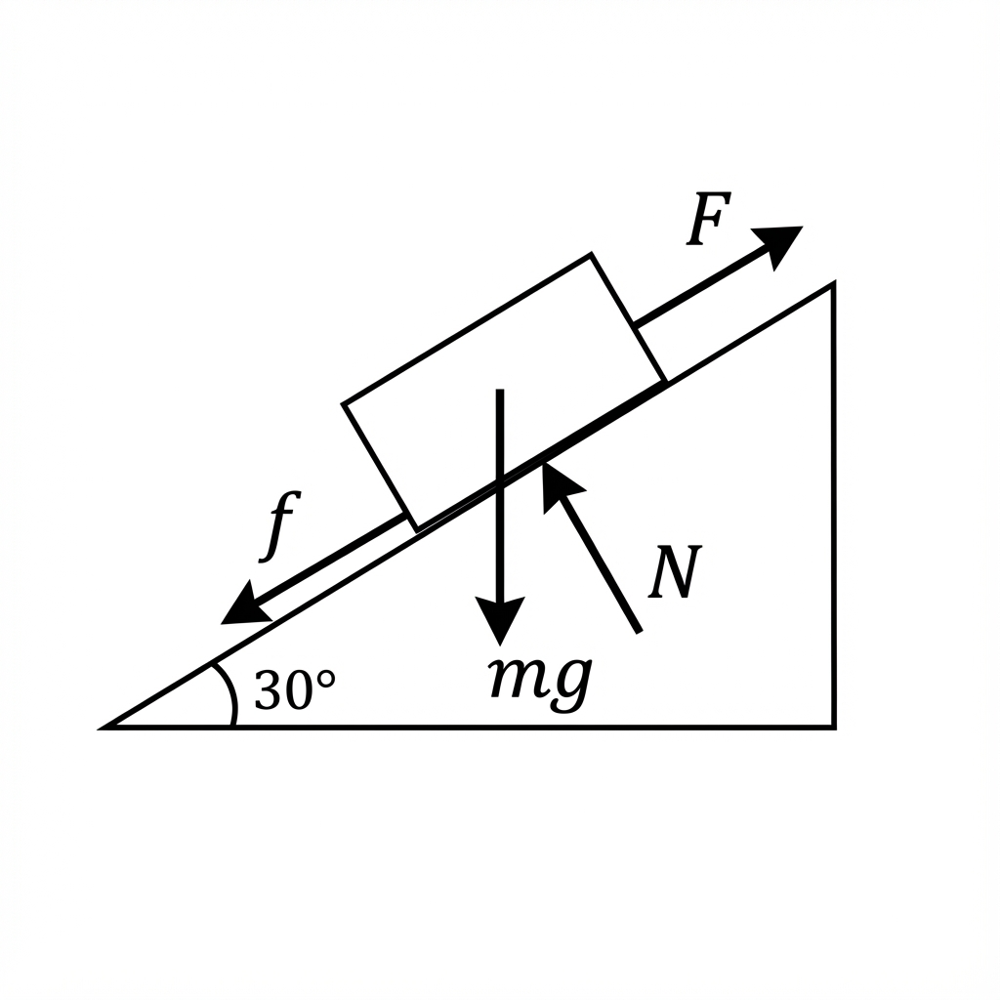
Q10b: In Q10a, if \(\mu_k = 0.2\), what is the work done by friction?
$$ W_f = -\mu_k N \cdot d = -17.32(5) = -86.6 \text{ J} $$
Q10c: A box is pulled at \(37^\circ\) above horizontal with force \(50 \text{ N}\) over \(8 \text{ m}\). What is the work done?
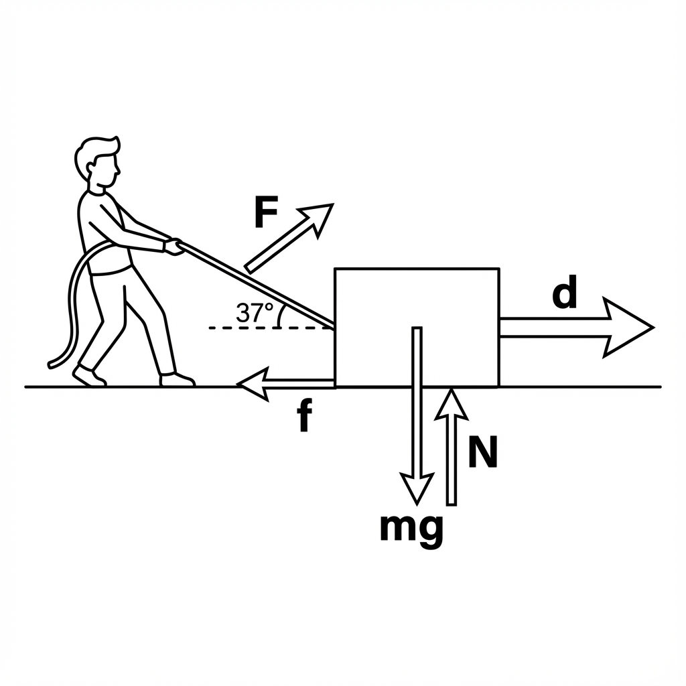
Q10d: What force is needed to pull a \(20 \text{ kg}\) box at constant velocity if \(\mu_k = 0.25\)?
Q10e: Given \(\vec{F} = 5\hat{i} - 3\hat{j} + 2\hat{k}\) N and \(\vec{d} = 2\hat{i} + 4\hat{j} - \hat{k}\) m, find the work done.
Q10f: An object moves in uniform circular motion. What is the work done by the centripetal force?
Q10g: An elevator of mass \(500 \text{ kg}\) rises \(20 \text{ m}\) at constant speed. What is the work done by the cable?
Q10h: \(\theta = 120^\circ\), \(|A| = 6\), \(|B| = 4\). Find \(\vec{A} \cdot \vec{B}\)?
Q10i: A crane lifts \(200 \text{ kg}\) with acceleration \(2 \text{ m/s}^2\) through \(15 \text{ m}\). What is the work done?
Q10j: A force of \(100 \text{ N}\) acts over \(10 \text{ m}\) and does \(500 \text{ J}\) of work. What is the angle between force and displacement?
🌀 Topic 3: Springs & Variable Forces
Q11: A spring with \(k = 200 \text{ N/m}\) is stretched \(0.1 \text{ m}\). What force does the spring exert?
Q12: How much work is required to stretch the spring in Q11 from equilibrium to \(0.1 \text{ m}\)?
Q13: If you stretch a spring twice as far (from \(x\) to \(2x\)), how much more potential energy is stored?
Q14: The area under a Force vs. Position graph represents what quantity?
Q15: A spring is compressed by \(x\). Does the spring do positive or negative work on the block compressing it?
Q15a: Two springs in parallel have \(k_1 = 100\) N/m and \(k_2 = 200 \text{ N/m}\). What is the equivalent spring constant?
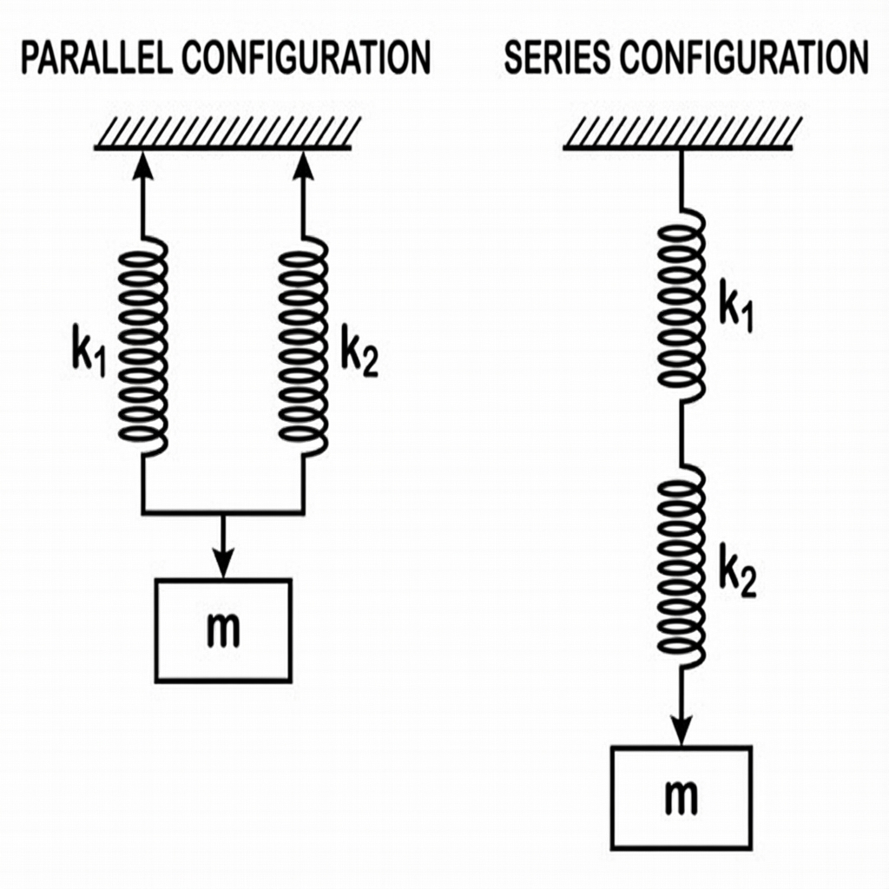
Q15b: Two springs in series have \(k_1 = 100\) N/m and \(k_2 = 200 \text{ N/m}\). What is the equivalent spring constant?
Q15c: A spring with \(k = 500 \text{ N/m}\) is compressed by \(0.2 \text{ m}\). What is the stored potential energy?
Q15d: A variable force \(F(x) = 3x^2\) acts from \(x=0\) to \(x=2\) m. What is the work done?
Q15e: A spring is stretched from \(x_1=0.1\) m to \(x_2=0.3\) m, with \(k=400\) N/m. What is the work done by the spring?
Q15f: A \(0.5 \text{ kg}\) mass hangs from a vertical spring and settles at \(x=0.05\) m. What is \(k\)?
Q15g: An F-x graph shows force increasing linearly from 0 to 40 N over 10 m. What is the work done?
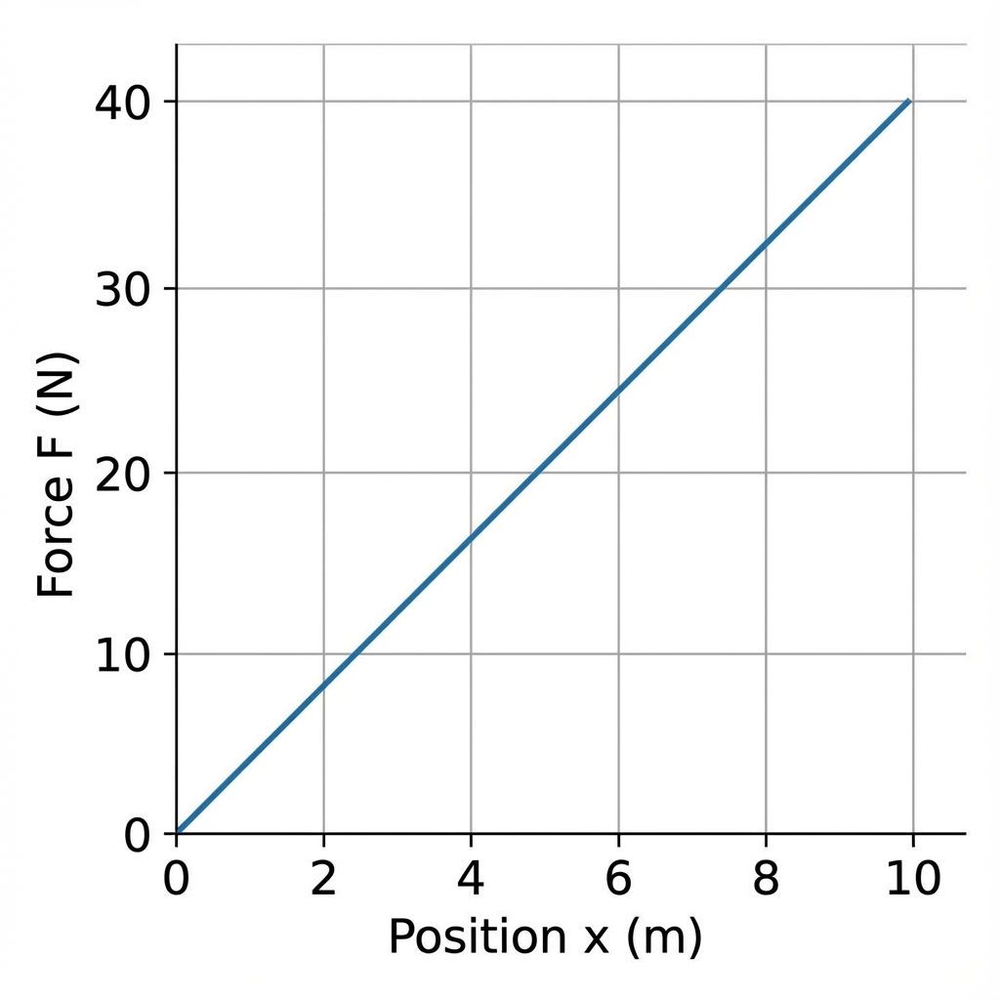
🏃 Topic 4: Kinetic Energy & Work-KE Theorem
Q16: If the speed of a car doubles, its kinetic energy increases by what factor?
Q17: Can kinetic energy ever be negative?
Q18: A net force of \(10 \text{ N}\) acts on a \(2 \text{ kg}\) object over \(5 \text{ m}\). What is the change in Kinetic Energy?
Q19: Two identical cars travel at the same speed. One heads North, one heads East. Do they have the same Kinetic Energy?
Q20: A particle moving at \(5 \text{ m/s}\) is brought to rest by a net work \(W\). Is \(W\) positive or negative?
Q20a: A roller coaster starts from point A (h=20m) with no initial speed. What is its speed at point B (h=0)?
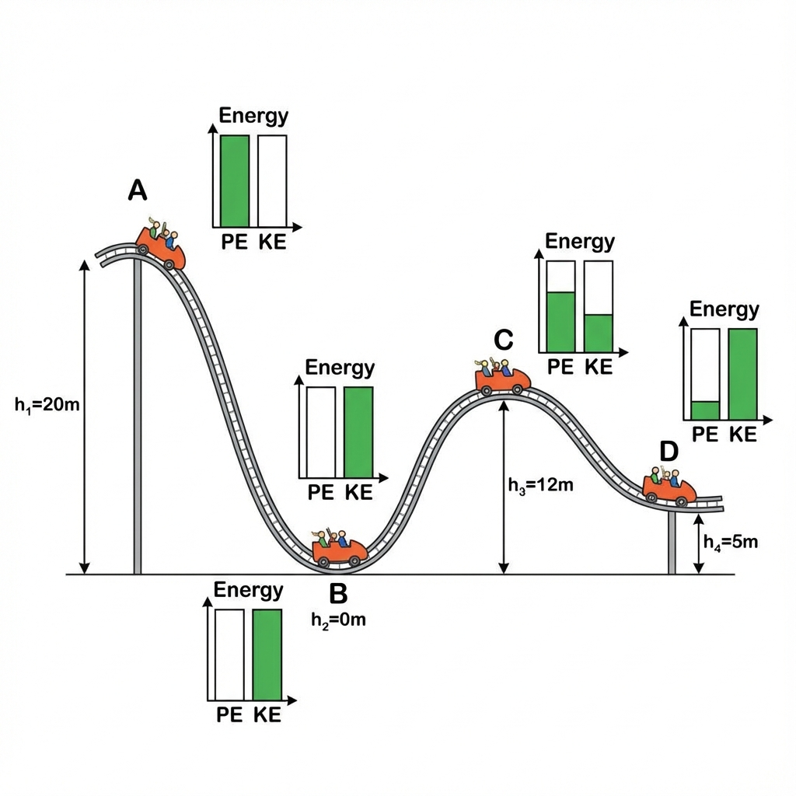
Q20b: In Q20a, what is the cart's speed at point C (h=12m)?
Q20c: A \(1000 \text{ kg}\) car moving at \(20 \text{ m/s}\). What work is needed to stop it?
Q20d: What distance is needed to stop the car in Q20c if the braking force is \(F = 8000 \text{ N}\)?
Q20e: A \(5 \text{ kg}\) object accelerates from rest to \(10 \text{ m/s}\). What is \(\Delta K\)?
Q20f: Two objects have the same KE. If \(m_1=2\) kg and \(m_2=8\) kg, what is the ratio \(v_1/v_2\)?
Q20g: A force doubles an object's speed. By what factor does its KE increase?
Q20h: Two balls have equal mass. \(v_1=3\) m/s and \(v_2=4\) m/s. What is the ratio \(K_1/K_2\)?
Q20i: A truck and car have the same KE. The truck has \(4\times\) the car's mass. What is the ratio of their speeds?
Q20j: An airplane with mass \(50000 \text{ kg}\) flies at \(200 \text{ m/s}\). What is its KE?
🌍 Topic 5: Potential Energy & Conservation
Q21: A \(1 \text{ kg}\) book is lifted \(1 \text{ m}\). What is the change in gravitational potential energy?
Q22: A ball is dropped from height \(h\). Just before hitting the ground, where has the potential energy gone?
Q23: Does the zero point of Potential Energy matter physically?
Q24: Friction is a nonconservative force. What happens to mechanical energy when friction acts?
Q25: A pendulum swings back and forth. At the bottom of its swing, is Potential Energy max or min?
Q25a: The diagram shows a simple pendulum. If the pendulum length is \(L = 2 \text{ m}\) and the maximum angle is \(\theta = 30^\circ\), what is the maximum speed at the bottom?
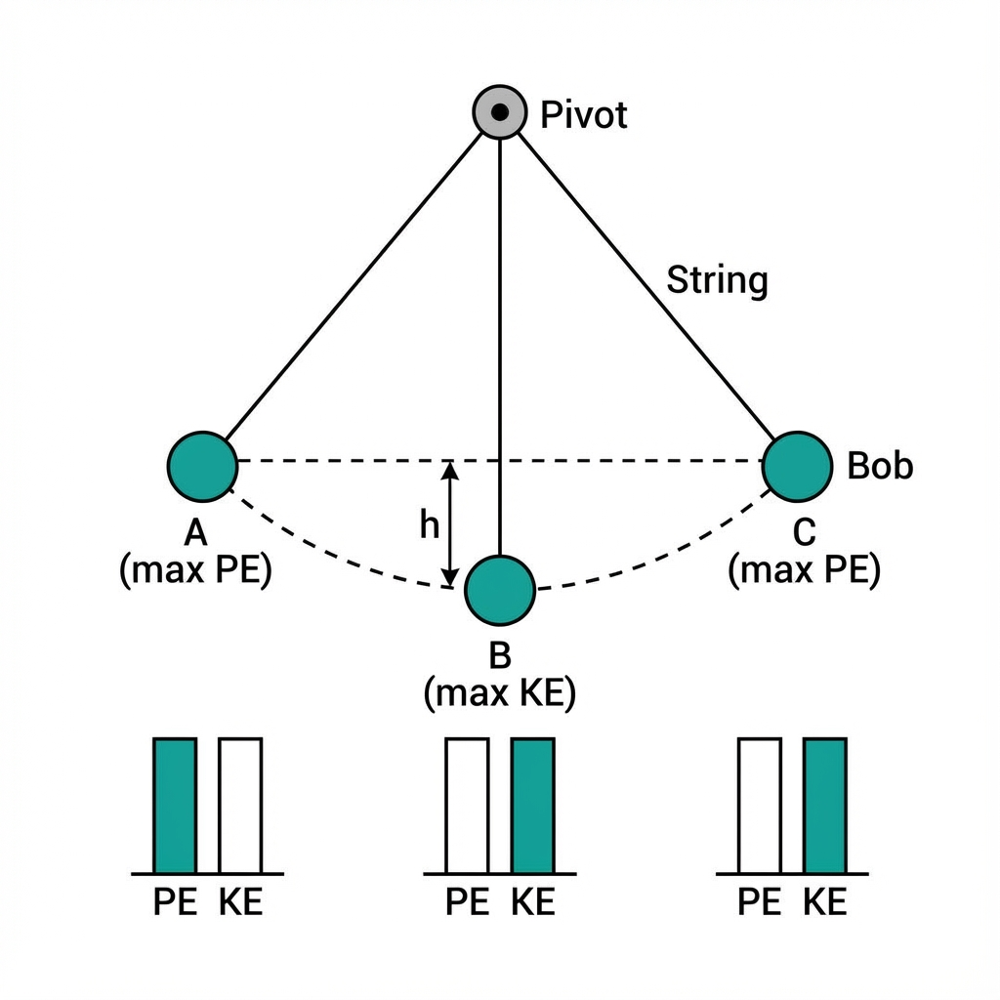
$$ v = \sqrt{2gh} = \sqrt{2(10)(0.268)} = 2.3 \text{ m/s} $$
Q25b: A \(2 \text{ kg}\) ball falls from \(h = 45 \text{ m}\). What is its speed just before hitting the ground?
Q25c: A slide has height \(5 \text{ m}\). What is the child's speed at the bottom?
Q25d: A ball is thrown upward at \(20 \text{ m/s}\). What is the maximum height?
Q25e: A \(4 \text{ kg}\) object falls from \(10 \text{ m}\). What is its KE when it's \(5 \text{ m}\) above ground?
Q25f: A spring with \(k=800\) N/m compressed \(0.1 \text{ m}\) launches a \(0.2 \text{ kg}\) ball. What is its speed?
Q25g: An object slides down a frictionless incline. Does it reach the same height on the other side?
Q25h: In Q25g, if there's friction, what happens?
Q25i: An elevator falls from \(25 \text{ m}\). What is its speed before impact?
Q25j: An arrow is shot from a bow at \(50 \text{ m/s}\). What is the maximum height if shot vertically?
🛡️ Topic 6: Conservative Forces & Equilibrium
Q26: If the work done by a force depends on the path taken, is the force conservative?
Q27: Given \(U(x)\), how do you find the force \(F(x)\)?
Q28: At a point of stable equilibrium, is potential energy at a minimum or maximum?
Q29: If a particle is at equilibrium, what is the net force on it?
Q30: A force does zero work on a round trip. What kind of force is it?
Q30a: The diagram shows a \(U(x)\) curve. Identify the stable and unstable equilibrium points.
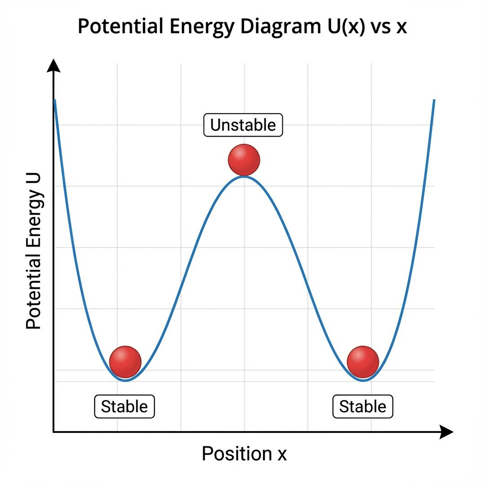
Unstable: Peaks (maxima) - where \(dU/dx = 0\) and \(d^2U/dx^2 < 0\)
Q30b: If \(U(x) = 4x^2 - 2x^4\), find the force \(F(x)\).
Q30c: An object moves between two points via two different paths. Is the work done by gravity (A) the same or (B) different?
Q30d: What is the condition for equilibrium in terms of \(U(x)\)?
Q30e: If \(U = 5x^2\), what type of equilibrium exists at \(x = 0\)?
Q30f: Is friction a conservative force? Why?
Q30g: An object slides from A to B and back. If it loses 20% of its energy to friction, what is its final height if it started from \(h\)?
📊 Topic 7: Graph-Based Problems
Q31: An object moving along the x-axis is acted upon by a force \(F_x\) that varies with position as shown. How much work is done by this force as the object moves from \(x = 2 \text{ m}\) to \(x = 8 \text{ m}\)?
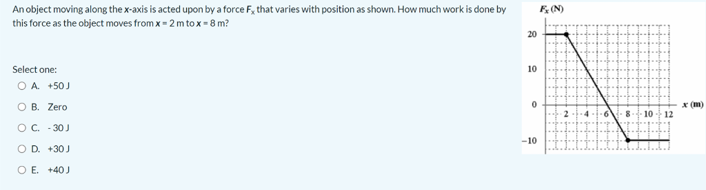
Options:
- A. +50 J
- B. Zero
- C. -30 J
- D. +30 J
- E. +40 J
• Region 1 (from \(x=2\) to \(x=6\)): Triangle above the axis
$$ W_1 = \frac{1}{2} \times \text{base} \times \text{height} = \frac{1}{2}(4)(20) = +40 \text{ J} $$ • Region 2 (from \(x=6\) to \(x=8\)): Triangle below the axis
$$ W_2 = \frac{1}{2}(2)(10) = -10 \text{ J} $$
Calculate total area as a trapezoid from x=2 to x=8:
Positive area (from x=2 to x=6) = 40 J
Negative area (from x=6 to x=8) = -10 J
$$ W_{\text{total}} = W_1 + W_2 = 40 + (-10) = +30 \text{ J} $$
Q31a: From the triangular F-x graph, calculate the work from \(x=0\) to \(x=8\).
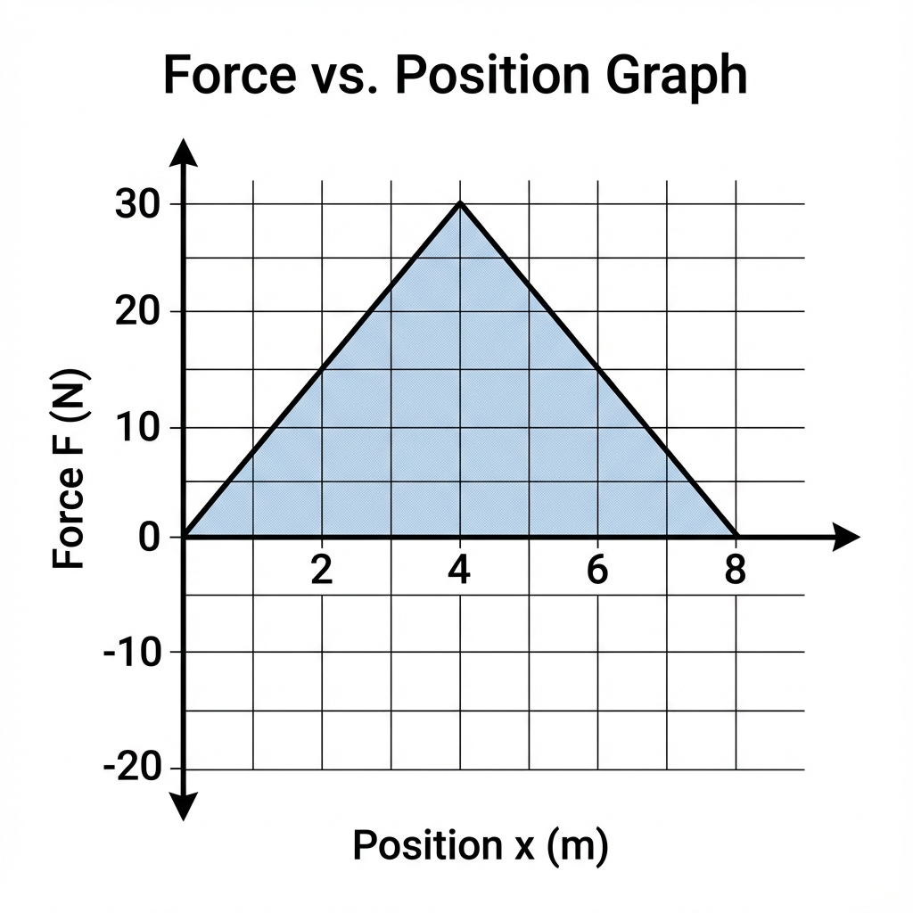
Q31b: A constant force \(F = 10 \text{ N}\) acts from \(x=0\) to \(x=5\). What is the work?
Q31c: Rectangular F-x curve: \(F=20\) N from \(x=2\) to \(x=7\). What is the work?
Q31d: A U-x graph shows a minimum at \(x=3\). What is the direction of the force at \(x=2\)?
Q31e: A U-x graph: \(U\) decreases from \(x=0\) to \(x=5\). What is the force direction?
Q31f: Trapezoid: \(F=0\) at \(x=0\), \(F=20\) at \(x=4\), \(F=20\) at \(x=8\), \(F=0\) at \(x=12\). What is the total work?
Q31g: A spring is compressed gradually. If \(F = kx\) and \(k=100\) N/m, what is the work to compress it by \(0.5 \text{ m}\)?
Q31h: Negative F-x curve (below axis): \(F=-15\) N from \(x=3\) to \(x=6\). What is the work?
Q31i: A K-x graph shows KE is constant. What is the total work on the object?